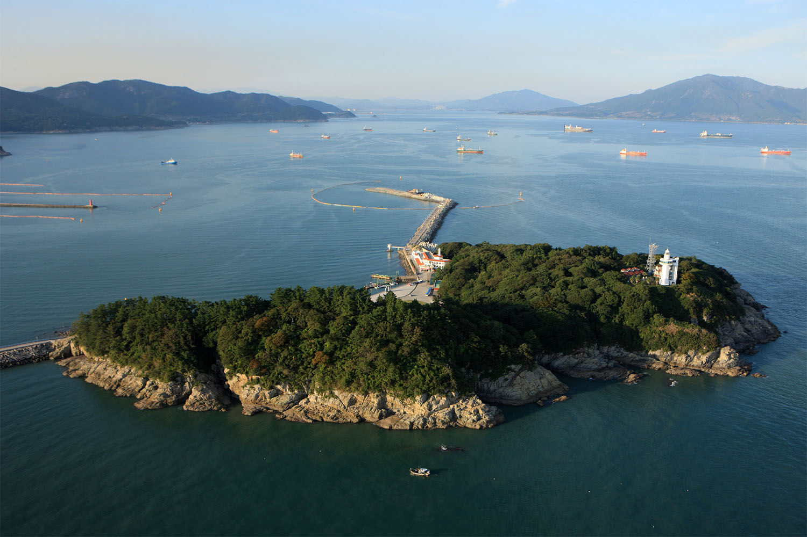
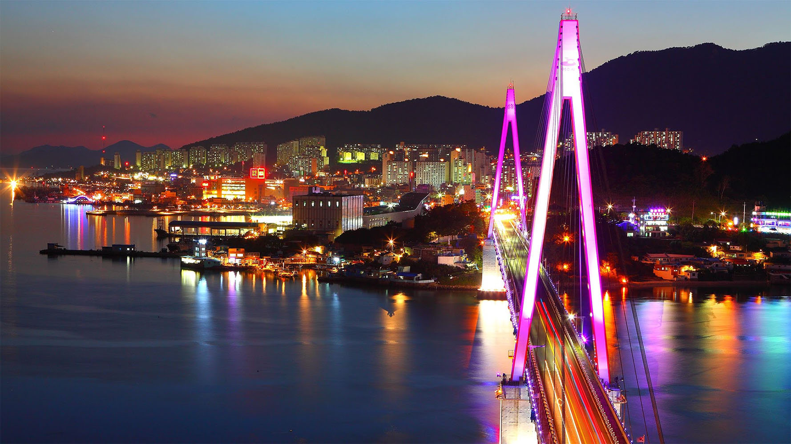
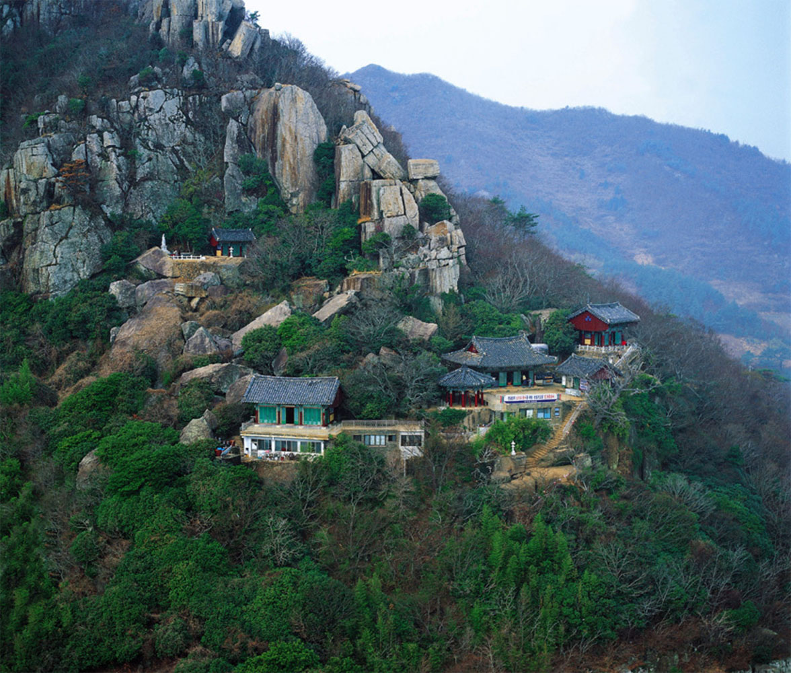
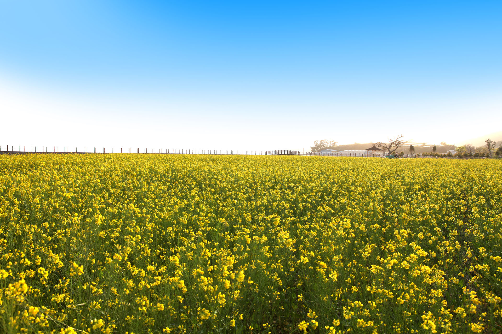
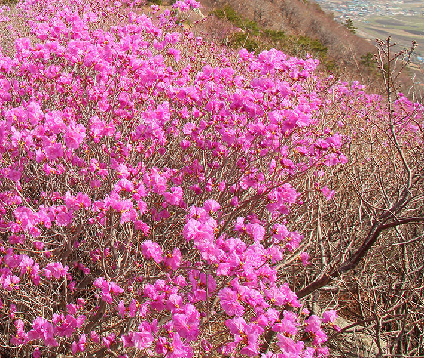

YEOSU
TOUR
TOUR
"한려수도의 기점을 이루는 푸르고 맑은 바다 여수"
예로부터 농경과 어로가 발달한 양향이었으며, 임진왜란을 극복한 이 충무공과 그를 따르던 선열들의 얼이 담겨진 호국충절의 고장이다.

오동도
사계절 사람들이 찾아가는 곳!!!
주소 : 전라남도 여수시 오동도로 222

여수밤바다/산단야경
낭만과 황홀함이 넘치는 여수 도심 야경
주소:전라남도 여수시 종화동

향일암
커다란 바위 동굴인 일주문을 지나 만나는 새로운 세상
주소 : 전라남도 여수시 돌산읍 향일암로 60

금오도 비렁길
'비렁'은 벼랑(절벽)의 여수사투리
주소 : 전라남도 여수시 남면 심장리

여수세계 박람회장
끝없이 펼쳐진 바다와 공연이벤트
주소 : 전라남도 여수시 수정동
사진을 찍어 멋진 여수를 모두에게 보여주기
여수사진 콘테스트



